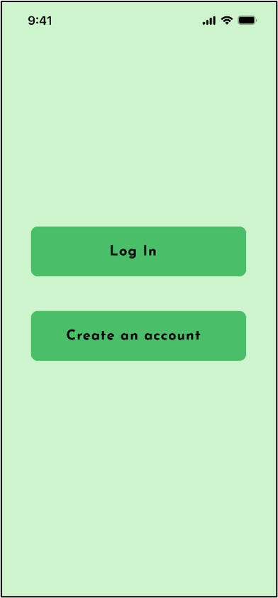
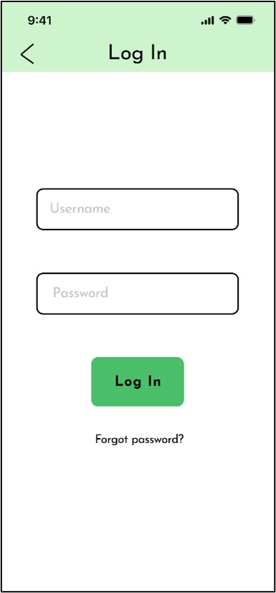
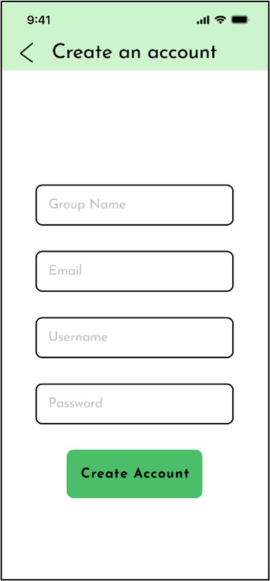
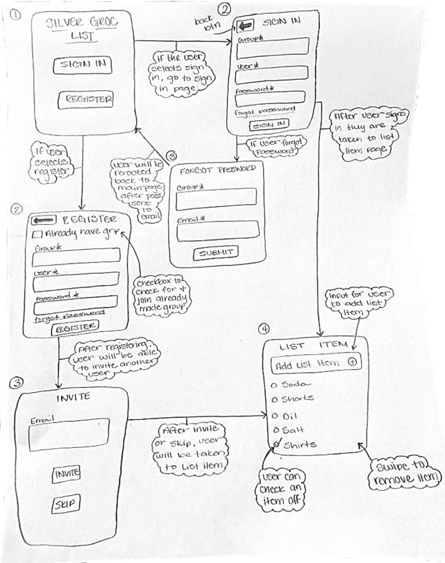
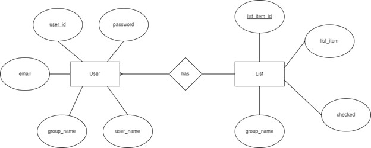

This phone app is designed to make grocery shopping easier. You first have to enter some login infomation to a database. Then, you can use the app. The list of groceries can be made once logged in! This is done by entering text into a text area. The text is stored in a linked list. See pictures of the design below:
  The images above show the design of the pages that collect data to the database. See more of the design process below:
This shows the whole app and all of the pages in the app.
The diagram above shows us how the database is designed. Here you can see Group or "grocery store". You can see usernames and passwords here as well. We have emails stored if you can't remember your password. This information is going back and forth from your app to the database.